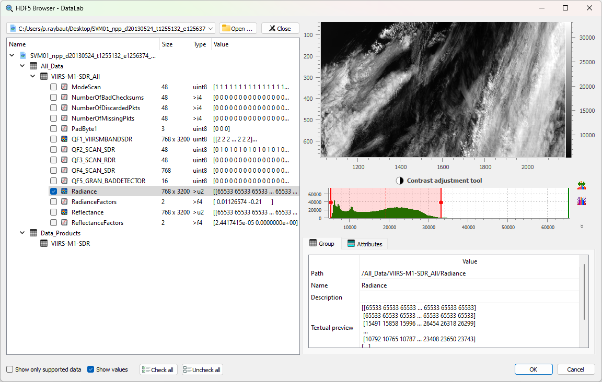

Espace de travail#
Concepts de base#
Travailler avec DataLab est très simple. L’interface est intuitive et appréhendable facilement. La fenêtre principale est divisée en deux zones principales :
La zone de droite affiche la liste des jeux de données actuellement chargés dans DataLab, répartis sur deux onglets : Signaux et Images. L’utilisateur peut basculer entre les deux onglets en cliquant sur l’onglet correspondant : cela bascule la fenêtre principale vers le panneau correspondant, ainsi que le contenu du menu et de la barre d’outils. Sous la liste des jeux de données, une vue Propriétés affiche des informations sur le jeu de données actuellement sélectionné.
La zone de gauche affiche la visualisation du jeu de données actuellement sélectionné. La visualisation est mise à jour automatiquement lorsque l’utilisateur sélectionne un nouveau jeu de données dans la liste des jeux de données.

Fenêtre principale de DataLab, au démarrage.#
DataLab a son propre modèle de données interne, dans lequel les jeux de données sont organisés autour d’une structure arborescente. Chaque panneau de la fenêtre principale correspond à une branche de l’arbre. Chaque jeu de données affiché dans les panneaux correspond à une feuille de l’arbre. À l’intérieur du jeu de données, les données sont organisées de manière orientée objet, avec un ensemble d’attributs et de méthodes. Le modèle de données est décrit plus en détail dans la section API (voir cdl.obj).
Pour chaque jeu de données (signal 1D ou image 2D), non seulement les données elles-mêmes sont stockées, mais aussi un ensemble de métadonnées, qui décrit les données ou la façon dont elles doivent être affichées. Les métadonnées sont stockées dans un dictionnaire, qui est accessible via l’attribut metadata du jeu de données (et peuvent également être parcourues dans la vue Propriétés, avec le bouton Métadonnées).
L”Espace de travail de DataLab est défini comme l’ensemble de tous les jeux de données qui sont actuellement chargés dans DataLab, dans les panneaux Signaux et Images. L’espace de travail peut être enregistré dans un fichier HDF5, puis rechargé ultérieurement. Il est également possible d’importer des jeux de données à partir d’un fichier HDF5 dans l’espace de travail, en utilisant l”Explorateur HDF5.
Note
Les jeux de données peuvent également être enregistrés ou chargés individuellement, en utilisant des formats de données tels que .txt ou .npy pour les signaux 1D (voir Ouvrir un signal pour la liste des formats pris en charge), ou .tiff ou .dcm pour les images 2D (voir Ouvrir une image pour la liste des formats pris en charge).
Explorateur HDF5#
L’explorateur HDF5 est une boîte de dialogue modale permettant d’importer presque n’importe quelles données à 1 ou 2 dimensions dans l’espace de travail de DataLab. Dans certains cas, des métadonnées sont également importées.
Les données de type courbe ou image sont affichées sous la forme d’une vue hiérarchique dans le panneau de gauche, de même que les données scalaires (les valeurs scalaires sont simplement affichées à titre d’informations contextuelles et ne peuvent pas être importées dans l’espace de travail de DataLab).
- L’explorateur de fichiers HDF5 est très simple à utiliser :
Dans le panneau de gauche, sélectionner la courbe ou l’image à importer
Les données sélectionnées peuvent être visualisées graphiquement dans le panneau de droite
Cliquer sur « Cocher tout » pour importer toutes les données compatibles
Valider ensuite en cliquant sur « OK »